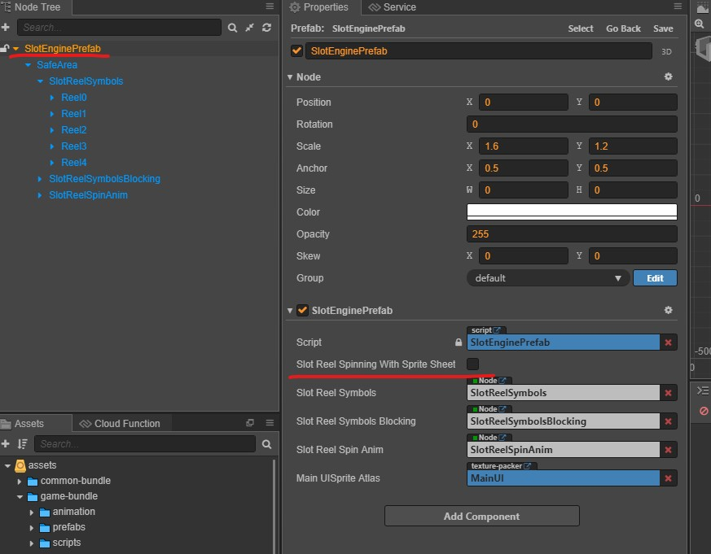
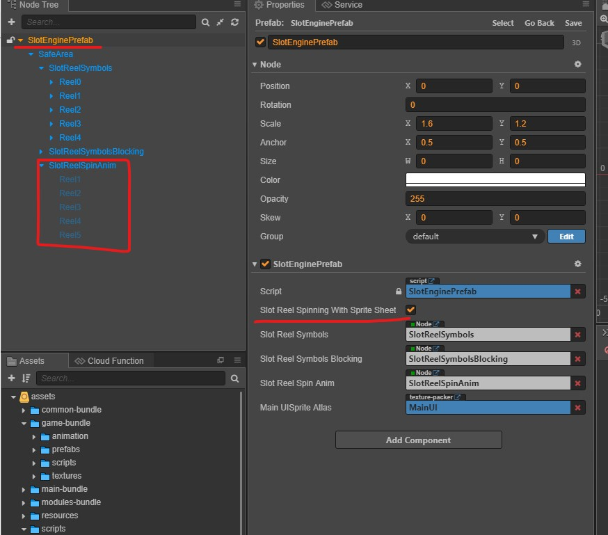

Slot Reel Animation Type
There is 2 type of slot reel animation
- Sprite sheet animation
- Symbol moving animation
Slot Symbol Moving Animation
Slot symbol moving methond. The most common methond to create slot spinning effect. Default enabled.

Deactivate Slot Reel Spinning With Sprite Sheet option. Super-Template default using slot symbol moving method.

Enable SlotReelStripPrefab component for each slot reel. Please make sure Normal Symbol and Blur Symbol assets place in same SpritAtlas.
Sprite Sheet Animation
Sprite sheet animation using animation to create slot spining effect instead of symbol moving method. It onyl apply to certain games only.

Make sure setup SlotReelSpinAnim animation first and enable Slot Reel Spinning With Sprite Sheet